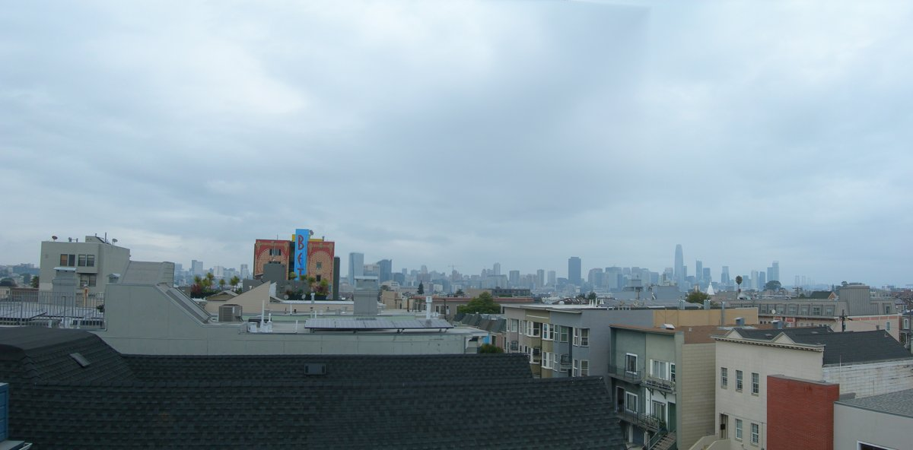

CS180: Computational Photography and
Computer Vision
Python, scikit-image, PyTorch
Python, scikit-image, PyTorch
As part of Fall 2025 CS 180, I completed a variety of projects implementing recursive image pyramids, image filters for blurring and isolation of frequencies, autostitching photo mosaics with homography and feature detection, NeRF, and diffusion models. Pictured is a panorama of the San Francisco skyline that I autostitched from multiple photos.